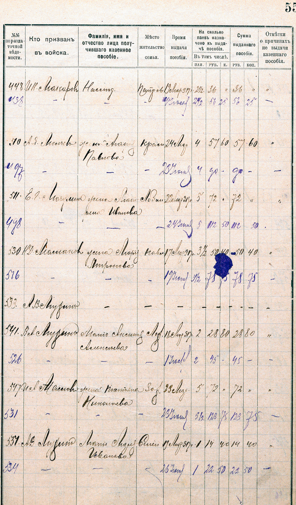
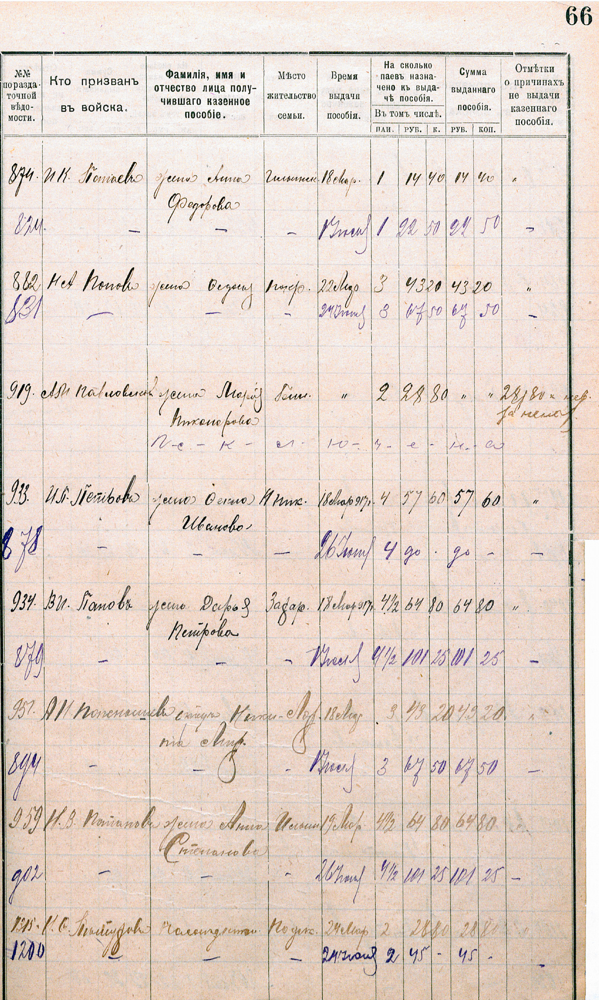
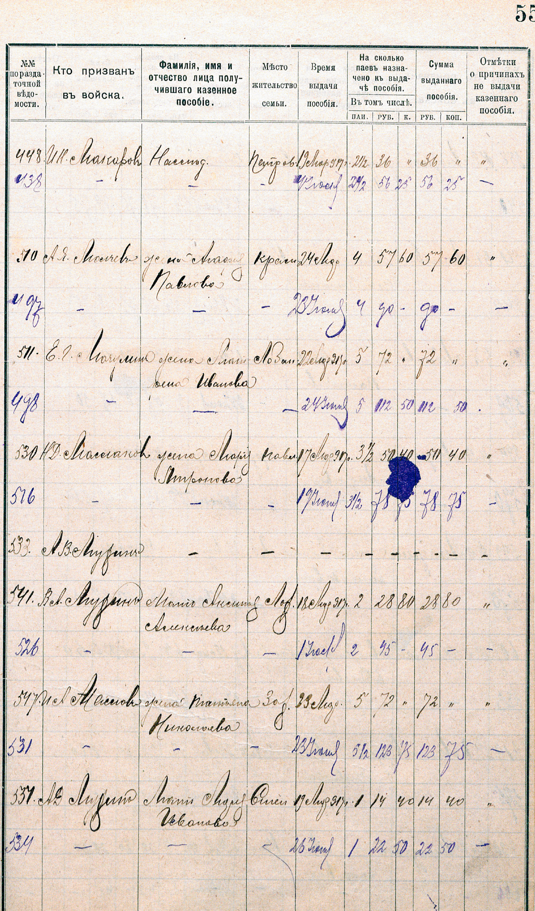
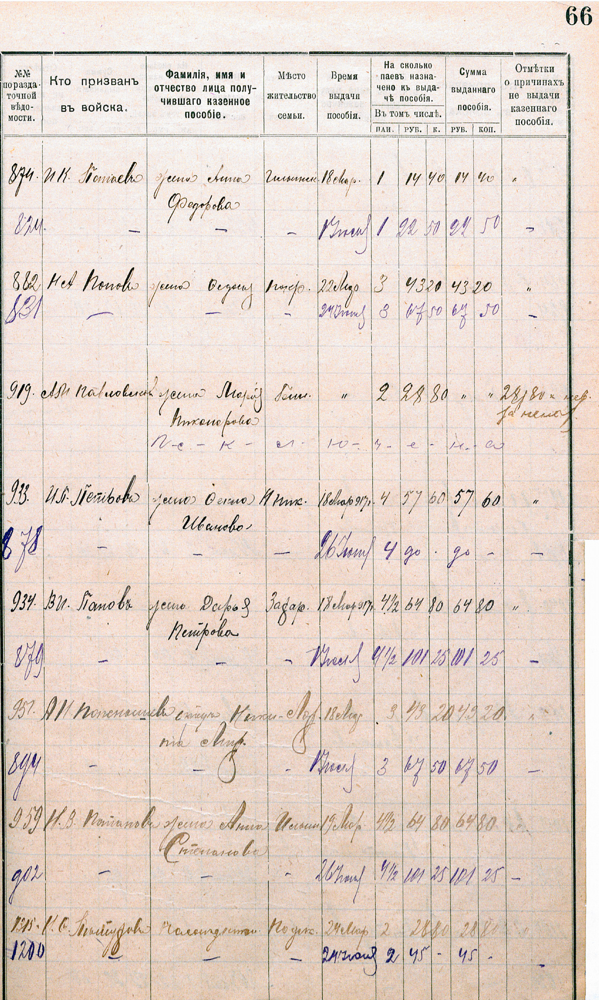
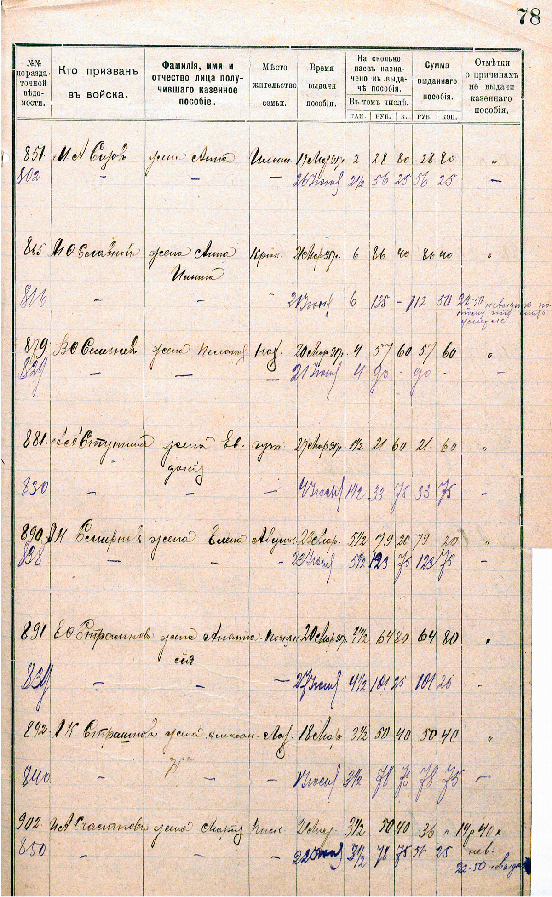
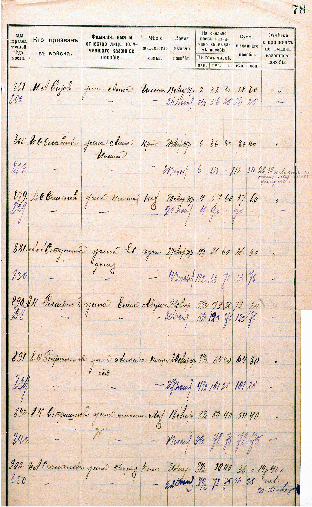
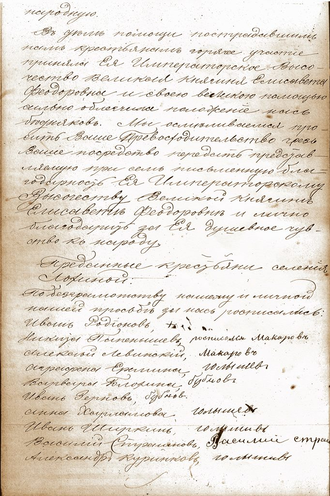
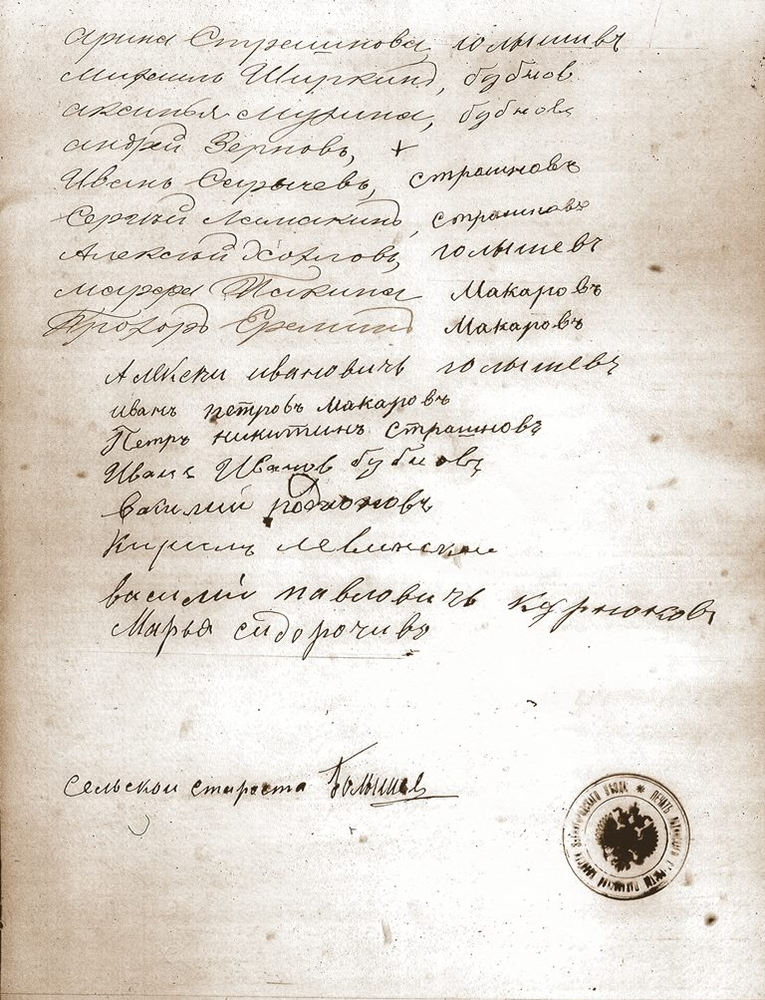
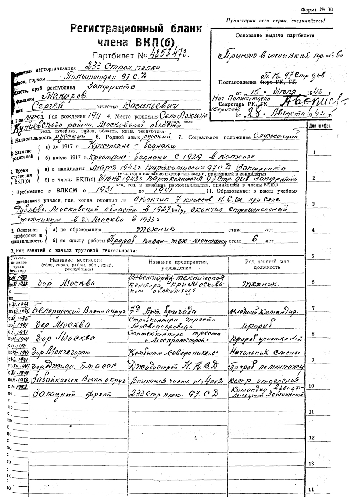
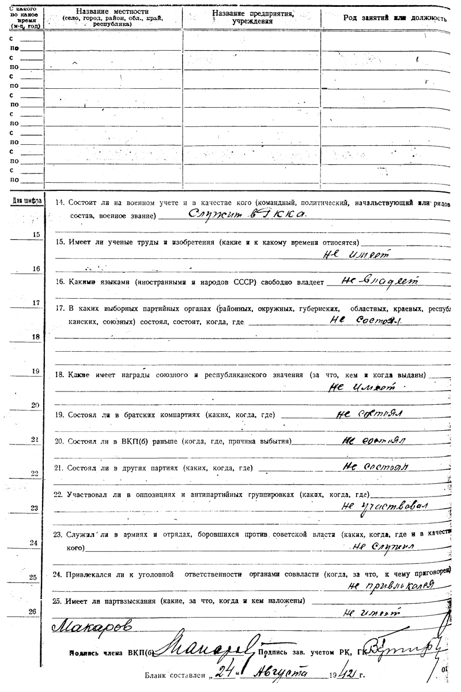

Деревня Лохино
Московская губернияЗвенигородский уездПавловская волость
Обобщенный банк данных «Мемориал» создан по инициативе Министерства обороны Российской Федерации в 2007 году. В настоящее время ОБД «Мемориал» содержит почти 17 млн. цифровых копий документов о безвозвратных потерях и 20 млн. именных записей о потерях Красной Армии в Великой Отечественной войне.
08.12.2016
Невидимый памятник деревни Лохино
{kind=link}
75 лет назад на подступах к Москве разворачивалось одно из самых масштабных сражений Великой Отечественной Войны. Много исследований и книг посвящено этой битве. В этом году проходят торжественные юбилейные мероприятия, вот и начало контр-наступления было отмечено открытием новых памятников в Москве. Тихо и безмятежно стоят немые свидетели той далёкой битвы, сёла и деревушки Подмосковья. Обо одной из таких расскажу вам я. Моя родная деревня Лохино. Всего каких-то 25 км от Московского Кремля. Каждый день, начиная с ночи 21- 22 июля 1941 года, эта деревушка становилась свидетелем противостояния 1-го корпуса ПВО и немецких Люфтваффе. Воины 3-го дивизиона 193-го зенитно-артеллирийского полка располагались на линии обороны Баковка-Мамоново-Старая Усадьба. Наши зенитчики успешно отгоняли немецкие самолёты, не давая прорваться к столице, поэтому свой смертоносный груз лётчики сбрасывали, куда попало, лишь бы быстрее уйти от заградогня ПВО. Вот именно под такую слепую бомбардировку попала и моя деревушка ровно 75 лет назад. По воспоминаниям жителей это была самая запоминающаяся ночь из всех, что они видели за дни воздушной битвы над Москвой.
Я долго собирался узнать детали этих событий и вот, наконец, добрался до фондов Центрального Архива Министерства Обороны, где нашёл сводки боевых действий 193 зенитного артполка. 6 декабря в районе деревни Лохино было сброшено до 20 зажигательных бом, в том числе, 2 фугасные. Для беззащитных стариков, женщин и детишек небольшой деревушки в тридцать дворов — это было ужасное зрелище. В результате такой воздушной атаки загорелось несколько домов, пострадала техническая часть полка, но страшнее всего для меня и по сей день остается мысль, что, где-то там, в землянках возле этих домиков ютились, дрожали и плакали дети, среди которых была моя бабушка и её младшие сестренки. К счастью, в ту страшную ночь никто из жителей не пострадал. Все последующие дни также прошли без серьезных происшествий. Однако, в памяти жителей они навсегда оставили гнетущие воспоминания. Вот и я сегодня мысленно переношу себя в те дни, вспоминая бабушку, её рассказы, вой сирены и слёзы, которые каждый раз наворачивались у неё при тех воспоминаниях. Пожалуй, это и есть наш деревенский мемориал, который живёт теперь в сердцах потомков. А на месте, где стояли орудия 3-го дивизиона сегодня раскинулся микрорайон Трёхгорка, Кутузовский, идёт очередная стройка, и последние следы тех суровых событий уходят под фундаменты и площадки новых домов.
Метри́ческая книга (устар.) — реестр, книга для официальной записи актов гражданского состояния (рождений, браков и смертей) в России в период с начала XVIII века (православные метрические книги — не ранее 1722 года) по 1918 год.
03.12.2016
День неизвестного солдата

Сегодня уже 3-й год подряд в России официально отмечается "День неизвестного солдата". Этот день берет своё начало 50 лет назад. Дата 3 декабря выбрана в связи с тем, что именно в этот день, в 1966 году, в ознаменование 25-й годовщины разгрома немецких войск под Москвой, прах неизвестного солдата был перенесён из братской могилы на 41-м километре Ленинградского шоссе (на въезде в город Зеленоград) и торжественно захоронен у стены Московского Кремля в Александровском саду. История деревни Лохино неразрывно связана с периодом боёв под Москвой. Доподлинно известно, что в нашей деревне квартировались части 5-ой Армии. По воспоминаниям местных жителей в домах были расселены солдаты, стояла полевая кухня, в доме Блохиных располагался штаб одной из дивизий. Многие из солдат уходили в свой последний путь на фронт. Сегодня наша задача сделать их имена известными, чтобы впредь история писалась без войн и конфликтов.
21.11.2016
Михайлов день
В дореволюционной России в каждой деревне существовал свой праздник, справлявшийся в основном в память святого покровителя деревни. Наши предки, например, с особым вниманием встречали Михайлов день, так как Михаил Архангел был покровителем деревни Лохино. Также в этот день по народному обычаю, ублажали дворового. Он считался младшим братом домового, но его старались задобрить, чтобы он остался жить во дворе и не прислал вместо себя лихого. Для этого после произнесения специального заговора во дворе проводили дёгтем полоса, за которую дворового просили не выходить. Ставили ему ужин в хлеву. Кроме того, по обычаю, между Кузьминками и Михайловым днём справляли «куриные именины». Для того чтобы ублажить лихого, домового и дворового сразу, выбирали самого старого и худого петуха и ржавым тупым топором отсекали ему голову, принося в жертву «мелким бесам».
06.11.2016
Первая эстафета СК Лохино
Впервые в своей истории спортивный клуб "Лохино" принимал участие в эстафете по системе 5 по 4.2км. Соревнования проходили в знакомых для нас местах, на Крылатских холмах, соседних землях нашей деревни. Члены клуба показали отличные результаты, что отразилась на общекомандном итоге соревнований. 80 место среди 159 команд!
30.10.2016
5-й памятный забег бабушки Жени
5-й юбилейный забег памяти бабушки Жени традиционно прошёл на просторах Лохин острова. В этот раз забег составил дистанцию в 13 км. Шёл снег, воздух был настолько чист и свеж, что от него кружилась голова. Весь маршрут я рассказывал участникам забега про окружающие места, историю деревни и людей, некогда населявших этот край. Память о бабушке живет и преуможается вместе с историей деревни.
28.10.2016
Пособие семьям солдат Первой Мировой
{kind=link}
 



{kind=link}
{kind=link}


 

{kind=link}
В фондах архива Московской области снова новые открытия. В списках семей солдат, призванных из Павловской волости и получающих пособие обнаружились наши земляки:
В.И. Макаров (жена Евдокия Александрова)
В.В. Куренков (жена Варвара Васильева)
П.М. Сидырычев (мать Мария Федорова)
И.К. Страшнов (отец Кирил Василиев)
А.К. Страшнов (жена Александра)
А.Н. Попенышев (отец Никита Андр.?)
В.П. Пакин (жена Александра)
С.В. Родионов (жена Настасия Никифорова)
25.10.2016
Старший сын Ивана Петрова Макарова
Его звали Василий и он был первым ребенком, родившимся в семье Ивана Петрова и Феодосии Косьминой. Случилось это 5 апреля 1887 года.
Для выявления метрической записи о рождении Василия мне понадобился год. Метрическая книга находилась в плохом физическом состоянии и вот теперь она
оказалась у меня на руках. Все дети Ивана Петрова Макарова посчитаны. 4 сына и 2 дочери и только один из сыновей (Николай) умер в младенчестве, это очень хороший
показатель для того времени. Родители уберегли своих чад, а первым ушёл из жизни всё тот же Василий в 1944 году. Зимой получил "похоронку" на сына Сергея и крепко выпив, заснул
на холодной терассе. Вскоре Василий Иванович заболел и умер.
21.10.2016
Бабушка Женя
5 лет назад от нас ушла бабушка Женя. Это был физической уход, всё остальное, что связывало нас с бабушкой осталось. Осталась добрая память, её любовь, её жизнь и дела, которые она оставила нам для продолжения. Сегодня я могу с уверенностью сказать, что всё происходящее в моей жизни во многом обязано бабушке. Смерти нет, как нет ни начала, ни конца, есть ваши дела по которым вас будут помнить и продолжать их, если они в самом деле достойны памяти и внимания потомков.
13.10.2016
В небе октября 1941 года

Октябрь 1941 года. Вяземский капкан защёлкнулся 13 октября, поймав сразу 4 Советские армии. Открывалась прямая дорога на Москву. Последние силы были брошены под Можайск. Усиливались и налёты немецкой авиации на Москву. На их пути вставали дивизионы 193-го зенитно-артеллирийского полка. Один из них располагался в деревне Лохино. Именно о зенитчиках, стоявших в деревне, рассказывали наши старики, а тогда ещё дети, в своих воспоминаниях о тяжёлом, голодном и трагическом 41-м. Всего за время налётов в течение июля-декабря 1941 года 193-й ЗАП сбил 38 самолётов.
09.10.2016
С днём рождения, Алексей!
9 октября на территории заповедника «Лохин остров» состоялся забег в честь дня рождения одного из самых уважаемых членов спортклуба «Лохино», Алексея Николаева. Пробег составил классическую для острова 7.5 км дистанцию. Хмурая погода на старте сменилась солнечным финишем. Лично мне лес подарил белый гриб и свежайший чистый воздух. Спасибо острову и нашей деревне, которая в очередной раз объединила всех нас.
07.10.2016
Городской госпиталь №35
{kind=link}

9 сентября 1916 года в Городской госпиталь №35 по 2-му Тверскому участку г.Москвы поступил тяжелораненный нижний чин 310-го Шацкого полка. Звали его Макаров Гавриил. Городской госпиталь №35 находился по адресу Арбатская площадь. Сколько пробыл в госпитале наш прадед, когда он вернулся в родную деревню? На все эти вопросы я надеюсь найти ответы в архивах, а пока Гавриил борется за жизнь и мы знаем, что он одержит победу в этой схватке со смертью.
26.09.2016
Умер Макар Андреянов
12 сентября 1842 года умер тот самый Макар Андреянов от кого в будущем образовалась фамилия Макаров, которую стал носить его внук Иван (1863-1934).
Это событие стало известно из метрической книги церки Михаила Архангела:
запись №19
умер 12 сентября
погребен 15 сентября
Вотчины князя Бориса Николаевича Юсупова деревни Лохиной крестьянин Макар Андреянов 44 лет, от чахотки.
Исповедовал и приобщал приходской священник Николай Васильев
Погребение совершал: приходской священник Николай Васильев Тропаревский с диаконом Андреем Николаевы, дьячком Петром Михайловым.
Погребен при Архангельской церкви на кладбище.
20.09.2016
Мы сторожа имения князя Юсупова

Прошение
В Павловский земельный комитет
Товарищу Председателю
Мы сторожа имения князя Юсупова, села Архангельского обращаемся к Вам с просьбой о прибавки нам жалованья,
ввиду теперешней дороговизны, поэтому мы сторожа имения князя Юсупова входим в состав земельного комитета,
поэтому и просим Вас обратить на это внимание, виду того что князь нам жалованье платит малое в количестве
48 руб[лей] в месяц и князь нам не прибавляет, то что можно сделать на теперешнее наше жалованье,
как Вам известно. Поэтому просим Вашего ходатайства об нас сторожей в числе 7ми человек,
в чем мы сторожа и подписуемся:
1918 года Февраля 11го дня.
Александр Старостин
Василий Макаров
Михаил Миришен
Иван Конышов
Иван Нуждин
Наталья Полекова
Константин Бекман
13.09.2016
Лохинское общество 1883 год
{kind=link}
Статистическая ведомость Лохинского общества за 1883 год подробно повествует о состоянии всех хозяйств в деревне, включая безземельных крестьян. В списке хозяйств указывает количественный состав семьи, сколько грамотных, количество покосов и чем занимается вне хозяйства. Исключительный по содержанию документ, да еще и с именами глав семейств.
12.09.2016
Сторож Василий Макаров

Сторож Василий Макаров приходился родным дядькой моего прадеда Гавриила Ивановича Макарова и старшим братом Ивана Макарова, моего прапрадеда. Родился он в 1859 году отслужил взводным унтер-офицером в Императорской армии. По возвращении домой, женился в 1889 году на Анне Васильевой Чистовой. До конца 1917 года семьи братьев жили вместе в одной избе. Детей у старших Макаровых не было, зато жена Анна являлась крестной матерью всех детей младшего Ивана. И всё эти истории стали известны, благодаря архивным документам архива города Москвы и Московской области. В том числе из списка служащих Архангельского имения.
03.09.2016
Книга о деревне Лохино
{kind=link}
Вышла первая часть книги о Деревне Лохино под моим авторством, однако, в работе над книгой принимала участие вся моя семья. Первая часть содержит общую информацию о деревне, а также родословную Макаровых. Во второй части книги планируется опубликовать воспоминания местных жителей.
18.08.2016
Инвалиду Империалистической
{kind=link}
История о том, как Гавриле Ивановичу отказали в льготах по инвалидности после Великой Отечественной войны получило свое продолжение. На основании архивных документов фонда 661 ЦГАМО (Документы Павловского ВИК от 1928 года), стало известно, что наш прадед был признан советской властью, как инвалид Первой Мировой Войны и получал пенсию в размере 12 рублей. Что же произошло после окончания Великой Отечественной Войны и почему ему отказали в льготах позже? На этот вопрос нам еще предстоит ответить.
01.08.2016
Великая война
102 года назад в 1914 году Российская империя вступила в доселе неслыханную по масштабам войну.
20 миллионов мобилизованных солдат прошли фронт. Мужики из деревни Лохино также ушли на неё, их было не меньше 6, и вернулись не все. В планах увековечить их имена на территории деревни Лохино.
23.07.2016
Бой у Стобыхова. 100 лет назад
Уже минуло 100 лет с даты, которая могла бы пройти незамеченной в летописи рода Макаровых. Однако, драматически события тех давних кровавых дней донесли до нас подробности боя 23 июля 1916 года. В результате боя на высоте 74.3 310-й Шацкий полк понёс большие потери, среди 76 раненых за этот день числился и рядовой 4 роты, Гавриил Макаров. Тяжелое ранение в голову сделало его инвалидом. Война для нашего прадеда закончилась. На фронте он пробыл с мая по июль 1916 года. Начинались мучительные дни восстановления.
12.07.2016
Командиры РККА из Лохино
Среди уроженцев нашей деревни нашлись такие, кто воевал в рядах РККА с командирскими петлицами. Их послужные карточки удалось найти в картотеке
офицеров Центрального архива МинОбороны в городе Подольске. К уже известному Сергею Макарову, добавились еще 2 офицера Красной Армии, прошедших войну. Это Сидорычев Иван Кузьмич и Курнаков Борис Георгиевич.
Уже скоро архивные документы появятся в разделе «Великая Отечественная война» вкладка «Герои».
29.06.2016
Ночной забег в «Старом» Лохино
Поздним теплым июньским вечером нам снова удалось организовать 7-ми километровый забег. Припарковавшись на окраине деревни
Глухово, я и мой верный друг Лёня Колесников организовали импровизированный ночной забег до нашей деревушки. Аромат цветов Ильинской поймы, птичьи трели с окружающих полей
отвлекли нас от будничной суеты и погрузили в совсем отвлеченные мысли. Забегая на остров, я всегда чувствую присутствие моей родной деревни и пусть на ее месте теперь растут полевые цветы, дух деревни остается здесь.
Вместе с ней, здесь живёт и память о моих предках, крестьянах Макаровых. Прибегаю сюда к ним чувствую, что я часть этого мира, этой деревни, её истории и жизни, которая продолжается несмотря ни на какие перипетии.
17.06.2016
Пленные из Павловской волости в Австро-Германском плену
{kind=link}
В фондах Центрального архива Московской области был найден список солдат, находившихся в австро-венгерском плену по Павловской волости по состоянию на 1917 год.
В списке есть и наши земляки. Это небольшое открытие, ведь по воспоминаниям жителей деревни мы знали только двух участников ПВМ, это Гавриил Макаров и Николай Филиппов.
Теперь к списку добавились еще четверо участников.
Василий Василиев Курнаков (срок службы с 1909)
Дмитрий Василиев Курнаков (срок службы с 1909)
Иван Кирилов Страшнов (срок службы с 1911)
Павел Михайлов Сидорычев (срок службы с 1911)
Часть из них точно возвратилась домой.
24.05.2016
Лев Макаров
Первенцы-близнецы Гавриила Ивановича и Прасковьи Ивановны родились 18 февраля 1925 года. Звали их Алексей и Лев. К сожалению, медицина того времени еще не умела выхаживать слабых и недоношенных малышей, поэтому они умирали еще на первых месяцах жизни. Не стали исключением близнецы Макаровы. Первым умер Алексей, 20 марта, Лев 24 мая. Лишь воспоминания бабушки дали нам основание для поиска информации о рождении и смерти наших близняшек. В роду Макаровых это были не первые известные близнецы, возможно, наш род еще пополнится парой прекрасных малышей. Работа продолжается.
13.05.2016
Николай Иванов Папенышев (Макаров)
13 мая 1898 года у Ивана Петрова Макарова родился третий по счёту сын Николай. По этому случае в метрической книге села Архангельское
было записано следующее:
Май
№6
Николай
родился 13
крещен 19
Родители:
Деревни Лохино крестьянин Иван Петров Папенышев, жена его Феодосия Кузьмина
Восприемники:
Деревни Лохино крестьянин Иван Павлов Куренков, той же деревни крестьянская жена Анна Васильева Макарова
Крестил:
Приходской священник Николай Виноградов с диаконом Феодором Покровским
09.05.2016
9 мая 1945 года в деревне Лохино
Тот далёкий и долгожданный день по воспоминаниям бабушки Жени был примерно таким:
"День победы я хорошо помню, ой, что было! Все скакали вокруг кричали, плакали, что было в тот день!
Мы по такому случаю накрыли стол на улице, включили патефон. Звучали песни Руслановой, Шульженко."
30.04.2016
Близнецы Михаила Макарова
В метрической книге церкви Михаила Архангела 1847 года, есть запись за 2 мая о крещении близнецов крестьянина Михаила Макарова,
старшего брата моего прапрапрадеда Петра. К сожалению, участь близнецов в те времена была печальна,как правило, они умирали в течении нескольких недель или месяцев. Так случилось и в этот раз.
А сама запись о рождении выглядела так:
в мае
№14 и 15 мужского пола
родились 30 апреля, крещены 2 мая.
Иван и Николай близнецы
родители: деревни Лохиной крестьянин Михаил Макаров и жена его Ефимия Яковлева
восприемники: той же деревни крестьянин Яков Егоров, той же деревни крестьянский сын Павел Никитин, той же деревни
крестьянская жена Матрена Григорьева, той же деревни крестьянина Родиона Осипова жена Мария Казмина.
14.04.2016
Он не пропал без вести
Мы продолжаем возвращать имена наших земляков с той далёкой войны. После поездки в архив Мин.Обороны,
стало известно, что младший лейтенант Хохлов Константин Алексеевич погиб в бою 12.7.1941 районе села Бородянка Киевской области.
Ниже выписка из учётно-послужной карточки Константина Алексеевича. Обращаю внимание, что по сведениям сайта ОБД-Мемориал он числится
"без вести пропавшим" с декабря 1941 года.
мл.лейтенант Хохлов Константин Алексеевич
командир взвода
4 полк ВНОС 3 дивизии ПВО
Убит в бою 12.7.1941 в районе посёлка Бородянка. Похоронен в посёлке Бородянка Киевской области.
Основание: перенесено из книги безвозвратных потерь от 18.7.1941
Жена: Александра Васильевна Хохлова
Ромашковский сельсовет Кунцевский р-н Моск.область.
06.04.2016
Умер от престарелости
6 апреля 1911 года по старому стилю ушёл из жизни долгожитель деревни Лохина, мой прапрапрадед, Петр Макаров Макаров.
Умер на 83 году от престарелости. Так записано в метрической книге села Архангельское. На век Петра Макарова выпало много событий, он рано потерял отца Макара Андреянова (1798-1842),
старший брат Михаил заменил отца. Главным итогом жизни Петра Макарова стали его дети, 4 дочери и 2 сына. Сегодня мы знаем о жизни наших предков,
а значит продолжаем их путь.
03.04.2016
Памятный забег в Старом Лохино
Воскресным утром, в 8:40 я был уже в деревне Глухово. По традиции совершил памятный забег по местам, где когда-то стояла деревенька Лохино. Вышел в поле, послушал ветер, прошелся вдоль леса, охватил взглядом домики, точнее представил их. Тепло и немного грустно на душе. Ушла жизнь из этих мест, а я вернулся, и как будто опоздал на 80 лет. А тем временем наступала очередная памятная дата. 121 год со дня рождения моего прадеда, Гавриила Ивановича Макарова. Вот поэтому поводу пробежал 10-ку и снова очистился до следующего визита в деревню, к истоку рода Макаровых.
28.03.2016
Майор Сидорычев
Сегодня в ЦАМО была получена Учетно-послужная карточка майора Сидорычева Василия Кузьмича. Поступил на службу в РККА в 1933 году.
Участник Советско-Финской войны, это и многое другое теперь доступно на странице Великая Отечественная Война, в разделе герои.
25.03.2016
Участники Великой Отечественной войны
На днях мы приняли решение создать полный список участников ВОВ, уроженцев деревни Лохино.
Информацию о них можно найти во вкладке «Герои» раздела «Великая Отечественная война».
01.03.2016
Из метрической книги прихода села Архангельское за 1906 год.
Среди метрических записей еще никогда не встречал подобных. Практически детективная история. Интересно чем закончилось следствие?
Ч. III "Об умерших"
Март
запись №3 числа 1
Найден в лесу Архангельского имения труп без головы неизвестного звания мужчина.
Погребен по предписанию пристава 2 стана Звенигородского уезда за №10.
11.02.2016
Самый младший из Макаровых
Уже более 100 лет назад родился последний из детей Ивана Петрова Макарова, Семён. Внучка дяди Сени несколько лет назад передала нам выразительную
фотографию, на которой изображен Семен, наш прадед Гавриил и их крёстная, Анна Васильева Макарова. А 114 лет назад всё было так:
Февраль
№4 родился 29 января
крещен 2 февраля
Симеон
Родители: деревни Лохина крестьянин Иван Петров Макаров, жена его Феодосия Космина — оба православного вероисповедания.
Восприемники: деревни Лохина крестьянин Андрей Филлипов Зернов, той же деревни крестьянская жена Анна Васильева Макарова
Крестил: приходской священник Николай Виноградов с диаконом Феодором Покровским.
10.02.2016
130 лет назад
Можно ли продлить свою жизнь? Не знаю и не сильно беспокоюсь об этом, а вот постигать дела минувших поколений всегда интересно,
если не сказать необходимо. Вот и в этот раз получилось довольно серьезная и круглая дата, 130 лет со дня бракосочетания родителей прадеда Гавриила.
Наши лохинские прародители. Низкий поклон за труд, жизнь, уважение. Ниже запись из метрической книги села Архангельское за 1886 г.
Февраль
№1 число 10
жених:
Звенигородского уезда, Павловской волости, деревни Лохина крестьянский сын Иван Петров Папенышев православного исповедания первым браком, 23 года
невеста:
Московской губернии, Серпуховского уезда, Хатунской волости, деревни Коляниной крестьянская дочь девица Феодосия Космина Панова, православного исповедания, первым браком 25 лет.
Венчал приходской священник Александр Николаев Тропаревский с приходским причтом
Поручители по жениху:
крестьяне Звенигородского уезда, Павловской волости, деревни Захаркова Василий Егоров Виляев и той же волости, деревни Лохина Иван Петров Харламов.
По невесте:
крестьянин Серпуховского уезда, Хатунской волости, деревни Коляниной Стефан Космин Панов и крестьянин Звенигородского уезда, Павловской волости, деревни Захаркова Никита Афонасиев Афонин.
01.02.2016
Переезд деревни Лохино. 1932-33 гг.
Совсем недавно мы отмечали 80-летие переезда деревни. Январь 2016 года вознаменовал 83-годовщину одного из ключевых событий в истории деревни Лохино.
Что такое для крестьянина покинуть свои родные края? Оставить дом, землю, на которой трудились столетиями твои предки. Представить сложно, что переживали и чувствовали
они в тот момент. С уходом из этих мест завершилась 300-летняя история одной маленькой деревеньки.
31.01.2016
Жители деревни Лохино. 1917 год
Наконец-то завершена работа по наполнению раздела «жители». В данном разделе представлена информация о всех совершеннолетних жителях нашей деревни по состоянию на 1917 год.
19.01.2016
Поручители жениха. 8 января 1888 год
{kind=link}
Когда берешь в руки метрическую книгу, то невольно ощущаешь некое волнение. Где-то там, на листах толстенной книги скрыты больше столетия истории людей. Вот одна из них. В поручителях по жениху стоят наши Макаровы, мой прапрапрадед Петр Макаров (1827-?) и его старший сын Василий Петров Макарычев (1859 - ?).
Метрическая книга часть 2 (о брачующихся) прихода села Архангельское (церкви Михаила Архангела).
Запись №1 8 января.
Жених: Деревни Лохино Павловской волости Звенигородского уезда, крестьянин Андрей Филиппов Зернов вторым браком, 32 года
Невеста: Аксиньинская волость села Дмитровского Звенигородского уезда, крестьянская дочь, девица Мария Егорова, первым браком 27 лет.
Поручители по жениху: крестьянин Лохина Петр Макаров и Василий Петров Макарычев,
Поручители по невесте: крестьяне Звенигородского уезда Павловской волости деревни Лохино Иван Андреев Куренков и Аксиньевской волости, села Дмитровского Алексей Егоров.
Подписи свидетелй записи по желанию: пусто
Священник: Александр Тропаревский
Дьякон: Константин Виноградов
Псаломщик: Федор Покровский
02.01.2016
День рождения бабушки Жени
Пролетают они и кажется, что мы играем главную роль. Вокруг жизнь, интересная, яркая, современная, но это обычная иллюзия. Наша жизнь миг. Мне очень повезло с моими стариками. 2 января 1928 года родилась моя бабушка Женя. Ну что за событие? Новая жизнь. Деревушка Лохино, недалеко от Усадьбы Архангельское. Крепкий морозец. Снег хрустит под валенками. Крестьянский домик, хозяин Гавриил, хозяйка Прасковья, сынок Витя. Роды традиционно прошли в избе. Жили тогда вместе с родителями Гавриила, Иваном Петровичем и Федорой Кузьминичной, но о рождении дочки Жени в ЗАГС заявила старшая сестра Гавриила Анна, проживавшая в соседней деревне Глухово. И все эти детали можно было найти на двух листах книги о рождении, а можно было и не искать и оставить все как есть. Без прошлого. Сегодня намного важнее, что передают по телеканалам, но есть связь поколений и мои первые шаги по ее восстановлению начинались с Макаровых. Вспомним всех наших добрых проводников по жизни, я уверен в вашей жизни они точно были.
26.12.2015
Звездная ночь над Глухово
Заехал вчера на чай в дом Усовых. Состоялась очередная беседа с Борисом Андреевичем. Вспоминали школьные годы, работу в колхозе, войну, послевоенное время, похороны Сталина. Сколько на своем веку повидал Борис Андреевич? На его молодость выпало самые драматические события XX века. Я сидел и слушал, слушал и не мог поверить себе, что все это видел своими глазами мой собеседник. Жизнь не сильно изменилась, похоже, мы так и не научились делать выводы из уроков прошлого. Вышел из гостей, решил прогуляться вдоль реки. Светит ярко луна, звезды на небе, река, как зеркало. Посмотрел на противоположный берег, там Лохин остров. Вот уже 82 года, как нет там нашей деревушки, но дух ее все там же, на исконных землях.
25.12.2015
Сапожник деревни Лохино
За суетой предновогодних дней совсем упустил одно важное для меня событие. 25 декабря 1956 года ушел из жизни мой прадед, Гаврила Иванович Макаров. Крестьянский сын, сапожник князей Юсуповых, рядовой 310 Шацкого полка, инвалид Первой Мировой, паромщик на переправе Лохино-Раздоры, конюх колхоза "Пламя", извозчик на Бадаевском заводе в Филях. Этот год прошел под знаком Гавриила Ивановича. Год 120-летия принес нам массу открытий. Род Макаровых известен до XVII века. Все эти успехи посвящаем тебе, дорогой прадед!
16.12.2015
В боях за Витебск
72 года назад, 16 декабря 1943 года, в бою за деревню Лаптевка Витебской области погиб Сергей Васильевич Макаров, старший лейтенант минометного взвода 83 Стрелковой дивизии. Было ему 32 года. Мы долго искали информацию о нем, сначала нашли могилу, потом фотографии с письмами, теперь вот знаем и биографию. Весь материал представлен на нашем сайте. Помним Сергея.
12.12.2015
Биография Николая Константиновича Виноградова (приходской священник церкви Михаила Архангела)
Николай Константинович Виноградов (1871 — 1938), протоиерей, священномученик. Родился 24 марта 1871 года в селе Архангельское Московской губернии, Звенигородского уезда в семье дьякона Михаило-Архангельского храма Константина Андреевича Виноградова и его жены Елизаветы Симеоновны. Обучался в училище при Московском Синодальном хоре и в Московской духовной семинарии. Из Московской Семинарии перевелся в Вифанскую семинарию, которую закончил в 1894 году. 14 октября 1894 года обвенчался с дочерью диакона Феодора Васильевича Херсонского Надеждой в церкви Рождества Христова в Палашах [3]. 1 ноября 1894 года был рукоположен епископом Дмитровским Нестором во священника. Стал служить в своем родном селе Архангельское Звенигородского уезда, был законоучителем земской школы. Прихожанам отец Николай запомнился как деятельный и рассудительный пастырь, пользовавшийся в округе уважением и любовью. На средства прихода содержались деревянные часовни в деревнях Захаркове, Воронках и Раздорах. Большое внимание настоятель уделял церковному образованию и воспитанию молодёжи. В декабре 1894 года он был назначен законоучителем архангельской четырёхгодичной земской школы, в которой обучалось более ста крестьянских детей. В 1910 году его избирают членом благочиннического совета. В 1911 году скончалась от туберкулёза в возрасте 36 лет его супруга Надежда Федоровна и он остался с пятью детьми. Дочери, Екатерина и Лидия, получили специальное образование и впоследствии стали учительницами. Сын Михаил учился в Московской духовной семинарии. Второй сын, Виктор, учился в Московском промышленном училище. Младший сын, Николай, родился в 1908 году и впоследствии был отдан учиться в Архангельскую земскую школу. В 1914 году преподавал Закон Божий в земской школе в деревне Гальево. С 1915 года помощник благочинного. В 1916 был выбран депутатом съезда духовенства Московской епархии. Свое пастырское служение отец Николай продолжал и после революции. Уже вовсю развернулась антирелигиозная пропаганда и начались гонения на Церковь, однако он каждую свою проповедь заканчивал призывом сохранять веру и не бояться посещать храм. 18 мая 1921 года в церкви во имя вмч. Димитрия Солунского села Истра Московской области возводится епископом Верейским Иларионом (Троицким) в сан протоиерея. В 1929 году был арестован за «сокрытие церковных ценностей». Приговор — 1 год и 6 месяцев лишения свободы с конфискацией имущества. В тюрьме «Матросская тишина» содержался с начала ареста и во время суда. В марте 1930 года подал кассационную жалобу и, доказав, что сокрытые ценности были его личным имуществом, добился отмены приговора с освобождением из-под стражи с прекращением дела. Освободившись продолжил служить в своем родном селе. Однако испытания не кончились. Вскоре пастыря арестовали, обвинив в антисоветской агитации и даже в создании контрреволюционной церковной группировки. Во время допросов священник держался стойко и с достоинством. Он, в частности, заявил следующее: Советскую власть я рассматриваю как власть народную, но гонимую на Божию церковь. Мы, духовенство Тихоновской церковной ориентации (к коим принадлежу и я), эту власть признаем как власть из времён Нерона несколько сот лет тому назад; и по своим убеждениям я прихожу к конечному итогу, что в г. Риме цезарь Нерон в 13 веке [4] издевался не только над духовенством, но всячески казнил бедных крестьян за то, что они верили в Бога: их отдавали на съедение и растерзание зверям, завёртывали в солому и зажигали людей верующих. Но Бог милостив, он освободил религию от такого гонения. Так и советская власть, которая сейчас делает гонения на религию, — Бог должен освободить Церковь от такого насилия; иначе говоря, сменить эту власть. Я предпочитаю власть монархическую, т. е. дореволюционную царскую, которая предпочитала Церковь. (...) Н. К. Виноградов. По постановлению «тройки» от 19 мая 1933 года отца Николая выслали в Восточный Казахстан на три года с лишением избирательных прав, конфискацией имущества и ограничением в выборе мест последующего проживания. В ссылке отец Николай тяжело заболел, потерял трудоспособность, и в 1935 году его досрочно освободили «ввиду инвалидности». Он поселился в городе Волоколамске (возможно, потому, что тогда здесь жил со своей семьёй его сын Виктор, работавший в районной МТС) и на новом месте сразу же включился в приходскую жизнь; его стали приглашать участвовать в богослужениях. Получив в 1936 году паспорт, он направил прошение Преосвященнейшему Иоанну, управляющему Московской епархией, Волоколамским районом, вновь стать приходским священником — в храме Рождества Богородицы, что на Возмище или в Покровской церкви близ кладбища. В начале 1937 года его сына Виктора арестовали и осудили. Отец Николай лишился средств к существованию и жил на небольшую помощь от старшей дочери. Был арестован и епископ Иоанн. Решение о новом назначении отца Николая, принималось уже епископом Дмитровским Сергием. В справке в частности говорилось, что протоиерей Николай Виноградов «состоит в общении с Московской Патриархией и в священнослужении не запрещён». 1 ноября 1937 года о. Николай получил назначение на должность настоятеля храма Покрова Божией Матери в селе Тимошеве Волоколамского района. По пути туда он остановился в Москве у дочери Екатерины (в замужестве Бакун). Последняя его фотография сделана как раз во время прощального чаепития. Остаётся неизвестным, что помешало отцу Николаю прибыть к месту назначения. Арестован 5 марта 1938 года и заключён в тюрьму в городе Волоколамске.
На допросе следователь спросил его:
— Скажите, вы были награждены повышением по службе — саном протоиерея?
— Да, я был возведён в сан протоиерея в 1921 году.
— Будучи протоиереем, вам приходилось говорить верующим проповеди, а если приходилось, то часто ли вы говорили и на какую тему?
— Да, мне приходилось говорить проповеди в церкви. Проповеди я говорил исключительно на тему праздника, когда поминается память того или иного святого. В заключение проповеди я всегда призывал верующих сохранять веру и не оставлять посещение храма.
— Проживая на станции Волоколамск, вы среди верующих вели разговоры, проявляя недовольство существующим строем и дискредитируя работников совета? — спросил следователь.
— Никакими антисоветскими разговорами я не занимался нигде и никогда, — ответил священник.
— Вам зачитывается ряд свидетельских показаний, где вы уличаетесь в дискредитации работников совета и антисоветских высказываниях.
— Зачитанные мне показания я слышал, — ответил священник, — но таковые я отрицаю, ничего подобного я не говорил.
2 июня 1938 года тройка НКВД СССР по Московской области приговорила его по ст. 58-10 УК РСФСР за «контрреволюционную агитацию» к расстрелу. Расстрелян 27 июня 1938 года и погребен в общей безвестной могиле на полигоне Бутово под Москвой. В августе 2000 года протоиерей Николай Виноградов был причислен к лику святых Юбилейным Архиерейским Собором Русской Православной Церкви.
10.12.2015
История образования острова

Лохин Остров был обозначен на карте ближайшего Подмосковья сразу после строительства Рублёвской водопроводной станции в начале XX века. При её постройке петля реки испрямилась, прокопанным каналом для усиления напора воды перед водокачкой. Таким образом, русло Москвы-реки от Ильинского до Раздоров стало искусственным, а прежнее, основное течение реки стали именовать старицей. С поднятием уровня Москвы-реки вода заполнила речную старицу, и деревня Лохино вместе с деревнями Луцкое и Поповка, а также обширным лесом оказались со всех сторон отрезаны от внешнего мира, что впоследствии предопределило их будущее переселение. Но, оказалось, что переселение деревни было не однажды! На топографической карте 1929 года деревня показана на другом месте Лохина Острова. На тот момент причина смены координат оставалась неясной. Тем более, что в своих воспоминаниях старики не упоминали о каком-либо переселении. И уже работая над книгой, я обнаружил в архивных документах информацию о наводнении, случившемся на реке Москве в 1908 году. Его последствия оказались для Лохино губительными – огромный ущерб был нанесён жилью, постройкам для скота, сельскохозяйственным угодьям. Учитывая, что изменившаяся речная система в районе острова в будущем могла преподнести новые неприятные «подарки» в виде стихийных бедствий, селяне в течение нескольких лет перенесли деревню на новое место - юго-западнее от её прежнего размещения. Пока это подтверждается только рядом косвенных доказательств (археологические находки), но подняты далеко не все архивы. А опрошенные мною старожилы по причине своего «молодого» возраста (рождены в конце 20-х и начале 30-х годов) могли и не знать об этой истории.
04.12.2015
Макаровы Павловской волости
При работе с фондами ЗАГС Павловской области архива Московской области часто сталкивался с фамилией Макаровы и Макарычевы. Так в деревнях Ленино, Павловское, Раздоры проживали именно представители этих фамилий. С большей вероятностью это были ответвления от общего предка, Макара Андреянова (1798 - 1842).
22.11.2015
Последний священник прихода села Архангельское.
Так получилось, что Михайлов день, прошедший вчера, плавно перетек в историю человека, напрямую связанного с деревней Лохино. История приходского священника, несшего службу в приходе церкви Михаила Архангела, где на протяжении 300 лет крестили наших предков, крестьян окрестных деревень. Последним священником прихода был протоиерей Николай Виноградов, он же упоминался в записи о крещении моего прадеда, Гавриила Ивановича Макарова, копия листа размещена в разделе "фотографии". О его последних годах поведал мне во вчерашнем рассказе житель деревни Глухово, Борис Андреевич Усов (1926 г.р.). Весь вчерашний вечер мы провели за воспоминаниями. Из рассказов Бориса Андреевича я узнал о Николае Виноградове, которого он лично знал. Жизнь священника трагически оборвалась в 1938 году, как именно, я узнал по базе общества «Мемориал», выложенной в сети интернет.
Виноградов Николай Константинович
Родился в 1871 г., Московская обл., Красногорский р-н, с. Архангельское; русский; образование среднее духовное; б/п; быв. протоирей Возмищенской церкви. Проживал: Московская обл., ст. Волоколамск, 1-я Майская ул., д. 52.
Арестован 5 марта 1938 г.
Приговорен: тройкой при УНКВД по Московской обл. 2 июня 1938 г., обв.: контррев. агитации.
Расстрелян 27 июня 1938 г. Место захоронения - место захоронения - Московская обл., Бутово. Реабилитирован в июле 1989 г.
21.11.2015
Михайлов день - праздник деревни Лохино.
По традиции, установленной церковью у каждой деревни был свой покровитель и церковный праздник, который считался днем деревни. Для деревни Лохино это был день памяти Собора архистратига Михаила, в простонародье называемый Михайлов день. Как его праздновали в нашей деревне нам пока не удалось выяснить, но в целом это был день проводов осени и окончания сезона свадеб. Кушали, пили, ходили в гости, забивали скотину, сезон заготовок завершался, начинался долгий зимний сезон.
12.11.2015
Фильм о памятном забеге 2015.
В свет вышел долгожданный фильм о том, как мы провели замечательный день 24 октября.
09.11.2015
Виктор Макаров.
Наконец-то удалось установить дату рождения 3-го по счету ребенка Гавриила и Прасковьи Макаровых. Виктор выжил и стал первенцом, но жизнь его трагически оборвалась в пионерском лагере под Волоколамском. По воспоминаниям его сестры, нашей бабушки Жени, Виктора ездили хоронить родители, отец сильно плакал, кричал от горя. Где и когда умер Виктор еще предстоит выяснить, а пока рождение. 20 января 1926 года. Виктор Гаврилович Макаров (1926 - ок.1936).
05.11.2015
Иван и Василий - дети Петровы.
Два младших сына Петра Макарова (1827-?), были единственными мальчиками в роду. Иван (1862) и Василий (1859) родились в период отмены крепостного права. Всю жизнь прошли бок о бок, по крайне мере в 1917 году, они жили в одном доме, в доме Ивана и, кстати, своего первого сына, Иван назвал Василий (1887). На руках лишь сухие статистические и метрические записи, это документы, с которыми не поспоришь, все остальное догадки, и все же чутье да и крестьянский быт подсказывают, что жили дружно и крепко дружили наши прапрадеды. Крестьянин Иван Петров, (1862 - 1934) и отставной взводный унтер-офицер Василий Петров (1859 - ?). Светлая память.

24.10.2015
День памяти бабушки Жени
Уже 4 года подряд мы собираемся на месте, где родилась бабушка Женя. В месте где не одно столетие стояла ее родная деревенька. Каждый год мы организуем забег по острову, закрываем купальный сезон, пьем чай и вспоминаем прошлые поколения. В этом году мы завершили написание книги о деревне и презентовали ее всем участникам мероприятия. С нами были наши дети, новые поколения помнят своих предков, род продолжается.
15.10.2015
Лёша и Лёва Макаровы
Жили на этом свете, правда, совсем ничего, два мальчика-двойняшки из семьи Гавриила Ивановича Макарова. Звали их Лёша и Лёва. Родились они 18 февраля 1925 года и бегать бы им вместе с Юрой Макаровым, сыном Василия Ивановича Макарова, озорничать и проказничать на улочках деревенских, а потом уходить на фронт, как и другим мальчишкам 1925 года рождения. Однако, дети крестьянские пока уходили из жизни не реже, чем рождались. Алексей умер 20 марта, Лев 24 мая 1925 года.
11.10.2015
Василий Иванович Макаров (1887-1944)
Буквально в пятницу, 9 октября, мы совершили очередное маленькое открытие. Смогли установить год рождения старшего сына Ивана Петрова Макарова (1863-1934). Сын Василий родился в 1887 году. Архив ЦГАМО хранит записи ЗАГС Павловского ВИК. За 1925 год была найдена запись о рождении сына Василия Ивановича, Юрия. В графе "сведения об отце" есть отметка о его возрасте, 38 лет. Точную дату еще предстоит выяснить, но теперь точно известны все года рождения детей Ивана Петрова. Василий (1887), Анна (1890), Наталия (1892), Гавриил (1895), Николай (1898), Семен (1902).

04.10.2015
Лохино сегодня
Деревня Лохино сегодня, это две улица, 1-я и 2-я Советские, переходящие потом в одну улицу, ведущую к Можайскому шоссе. За 80 лет облик деревни сильно изменился, но некоторые дома стоят еще с тех времен, когда деревню перенесли на новое место возле деревни Мамоново. Пожалуй, эти домики последние памятники уходящей деревенской культуры и очень бы хотелось, чтобы стояли они еще здесь, как можно дольше.
30.09.2015
Потомки жителей деревни Лохино. Встреча через 80 лет.
Нет худа без добра, пусть и через 80 лет, но мы все же находим друг друга. Мы - это внуки Ширкиных и Макаровых. Родители наших бабушек и дедушек вместе трудились у Юсуповых, бок о бок жили в одной деревни, делили радости и печали, крестили детей, провожали в последний путь и по другому не могло быть, ведь деревенские жили одной большой семьей. Вот и через 80 лет разлуки, мы снова встретились и ощущение соседства и дружелюбия не покинуло нас за столько лет. Антон Ширкин и его большая добрая семья тепло встретила меня в своем доме, в деревне Глухово. Нам не хватило целого дня, чтобы поделиться своими воспоминаниями, поэтому мы пообещали встречаться и впредь, а как может быть иначе? Мы ведь из деревни Лохино!
27.09.2015
Приходское кладбище села Архангельское.
Были сегодня в селе Архангельском, гуляли с нашими малышами. В усадьбе столпотворение. А мне хотелось побыть на том месте, где раньше было приходское кладбище. Ведь сколько поколений местных крестьян и представителей других сословий должно было здесь покоиться? И наших, лохинских не одно поколение, и имена теперь нам известны, но никаких свидетельств не осталось, ровная поверхность, газон, и одинокое надгробие Татьяны Николаевны Юсуповой. Кладбище было уничтожено в 60-е годы XX столетия. На этом последние визуальные источники о прошлых поколениях были окончательно стерты.
25.09.2015
Письмо с фронта
На сайте «Семейный летописец»
опубликовано письмо уроженца деревни Лохино, участника ВОВ, командира полка тяжелых танков, Еремина Владимира Дмитриева. Всем земляками, павшим на фронтах Великой Отечественной посвящается.
19.09.2015
Баковское кладбище
В этот день навестили могилу родных. На старом Баковском кладбище покоятся несколько поколений Макаровых. Гавриил, Прасковья, Надя, Анатолий, Александр и Владимир - родители, одна из дочек с мужем и сыновьями.
01.09.2015
День рождения на просторах Сетунского стана
В день рождения старшего внука бабушки Жени, Димы Балашова, мы смогли собраться на берегу реки Москва, где стояла деревенька наша. Стояла не одно столетие, правда, однажды пришлось ей поменять свое расположение, после наводнения 1908 года и перебраться на высокий берег, но и он не спас от затоплений деревушку в последующие годы. А мы приехали сюда в мой день, вместе с нашими детками и жёнами, брат Илья, жена его Люся, сын Макар, я, Маша, моя супруга, и детки, Василиса, Настя, Даня. Все вместе мы посидели под большой склонившейся к реке сосной, покушали походную пищу и сфотографировались на память, ведь корни наши здесь и поэтому мы снова и снова возвращаемся сюда.
{kind=link}
{kind=link}
{kind=link}
{kind=link}
15.08.2015
Наталия Ивановна Макарова
11 августа 1892 по старому стилю, в семьи Ивана Петрова и Федосьи Косьминой Макаровых родилась дочь Наталия. В метрической книге церкви Михаила Архангела по этому случаю была сделана следующая запись:
"Метрическая книга Михаило-Архангельской церкви, села Архангельского, Звенигородского у. на 1892 год
месяц Август
№21 родилась 11, крещена 15
Наталия
Родители: Звенигородского уезда, Павловской волости, деревни Лохина крестьянин Иван Петров Макарычев и законная жена его Феодосия Космина, оба православнаго вероисповедания.
Восприемники: Звенигородского уезда, Павловской волости, деревни Воронков крестьянин Никита Петров Бухнаев и той же Павловской волости, деревни Лохина солдатская жена Анна Васильева Макарычева
Обряд крещения совершал приходской священник Иоанн Алексеев Воскресенский с приходским причтом.".
Потомки Наталии Ивановной живут сейчас в деревне Ильинское Красногорского района, в прошлом году меня водили к дому Наталии Ивановны, вышел внук, в дом не пустил, бабушку совсем не помнит и никаких вещей от нее не хранит. Вот такая семейная память разнеслась по земле русской за последние 100 лет. Собираем теперь.
01.08.2015
Герои Первой Мировой из деревни Лохино
1 августа 2015 исполнилось 101 год со дня вступления России в Первую Мировую Войну. Событие по своей значимости и масштабности занимающее одно из главных мест в отечественной истории. Дата, которая поставила окончательный крест на империи, просуществовашей более 200 лет. Для нас же событие это стало не менее важным, а если правильно сказать трагическим, повлекшим за собой развал строя, уклада, традиций, культуры. Мы начали терять свои корни, семьи, родных. Процесс разложения общества был успешно завершен приходом к власти большевиков. Жертвами этих ужасных процессов стали все слои общества. Из деревни Лохино на войну ушли два крестьянских сына: Гавриил Иванович Макаров (1895-1956) и Николай Иванович Филиппов (Бубнов) (1892-?). По неуточненным данным, Николай Иванович Филиппов был награжден Георгиевским крестом 4 степени. На данный момент по этому вопросу ведется архивная работа, а мы потомки героев Первой Мировой Войны помним и приумножаем память о жертвах войн на страницах наших ресурсов.

26.07.2015
26 июля родственники Сергея Васильевича Макарова (1911-1943) посетили воинское захоронение в деревне Холомерье Городокского района Витебской области республики Белоруссия. Сергей Васильевич погиб 16.12.1943 года в бою у деревни Езерище, похоронен был там же, а в 50-е годы в целях уплотнения захоронений района прах воинов был перенесен в деревню Холомерье. Сегодня на воинском кладбище покоятся около 3000 солдат и офицеров Красной Армии.
Воинам Красной армии, павшим на Белорусской земле, а также замученным мирным жителям Витебщины и Смоленщины посвящается короткометражная видеоистория.
23.07.2015
"Ранен 23.07.16 в бою на реке Стоход"
99 лет назад, 23 июля 1916 года, был тяжело ранен наш прадед, рядовой 310 Шацкого полка, Гавриил Иванович Макаров (1895-1956).
Гавриил Иванович стал участником одной из самых кровопролитных сражений Первой Мировой Войны, Ковельской битвы. Благодаря помощи моего учителя и большого специалиста по Первой Мировой Войне, Александра Борисовича Асташова, впервые публикуются архивные данные, донесения 9 Бригады, в которую входил 310 Шацкий полк, а также схема расположения 1 батальона 310 Шацкого полка по состоянию на 23.07.1916, в день когда был ранен Гавриил Иванович.
Спешно, секретно.
Командиру бригады, генерал-майору Лосеву, командирам 309, 310, 311, 312 полков, командиру 78 артиллерийской бригады.
1. Сегодня ночью 1 Сибирская дивизия следует на наши части на позиции на левом берегу Стохода.
2. По смене 78 див займет участок р. Стоход от вершинки что между рукавами Стохода в 1,2 верстах устье д. Бол Обзир. Включительно до поперечного рукава р. Стоход, который идет на восток от надписи «Рода» что у деревни Стабыхов.
3. начальник див приказал:
а) 312 Васильсковскому полку в 21.30 вечера сегодня 23 07. выступить по дороге на Береусица? – отметка «пас» и Бр.к» и далее на высоту 74,3 для смены на участке р. Стохода от отметки 72,4 – поперечный рукав восточнее г. дв. Стабыхов частей 27 пехотная дивизия.
б) 311 Кременецкому полку, когда части 1 див подойдут к д. Бережиница, выступить и перейти,по указанной выше для Васильковского полка дороге, к высоте 74,3 где стать в дивизионом резерве
в) по смене 309 Овручскому и 310 Шацкому полкам отойти по той же дороге к высоте 74,3 где также стать в дивизионном резерве
г) 1 и 2 батареям 78 артил. бриг оставаться на своих позициях.
Прочим батареям стать сегодня ночью, по смене их батареями 1 сиб. бригад, по позиции к северу от позиции 1 батарее до ур. Моцковы, Острова, сменил там батареи 27 артиллерийской бригады.
д) застав от 24 опол. конной сотни силой в 0,5 сотни наблюдать и охранять участок р. Стоход от верхушки что в 1,5 верстах южнее у. Бол Обзир включительно до отметки 72,4 поддерживая твердую связь между правым флангом 27 п.д.
4). 309-311 полкам по сосредоточении их в районе высоты 74,3 подчиниться генерал-майор Лосеву, которому и дать соответственные указания командирам полков по их расположении у этой высоты.
Штаб дивизии временно остается в Трояновке, затем перейдет в д. Градиски.
Приказ дополнительный
Подполковник Окермен

15.07.2015
Памятный забег на территории заповедника "Лохин остров"
15 июля состоялся памятный забег по территории заповедника, где не одно столетие стояла наша родная деревенька Лохино. Спортклуб Лохино был представлен двумя участниками: Леонид Колесников и Дмитрий Балашов. Маршрут протянулся вдоль берега реки Москва и составил 11 км. Время забега - 2 часа 2 минуты. После забега состоялась встреча с еще одним участником клуба, Петром Никифоровым. В кафе у деревни Глухово была презентована новая эмблема клуба.

10.06.2015
Благодаря Дмитрию Миняшеву, потомку сразу двух лохинских родов Ереминых и Папенышевых, мы имеем честь представить фотографию командира 13-го отдельного гвардейского танкового полка прорыва, гвардии полковника Еремина Владимира Дмитриевича (1901-08.10.1944), уроженца деревни Лохино. Дмитрий также любезно предоставил письмо Владимира Дмитриевича, которое мы опубликовали в разделе Великая Отечественная Война.

04.06.2015
В Государственном Архиве РФ было найдено коллективное письмо жителей деревни Лохино, Захарково, датированное 15 июня 1908 года, и адресованное генерал-губернатору Московской Губернии Владимиру Федоровичу Джунковскому. Жители деревень благодарят московского начальника за помощь, оказанную в ликвидации последствий большого наводнения, случившегося в апреле 1908 года и нанесшего серьезный ущерб Москве и ее окрестностям. Ниже приводится оригинальный текст со сохранением орфографии и пунктуации:
Письма крестьян села Лохино и деревни Захарково, Звенигородского уезда, Павловской волости, Джунковскому В.Ф. С выражением благодарности за оказание помощи во время наводнения.
Письма крестьян села Лохино и деревни Захарково, Звенигородского уезда, Павловской волости, Джунковскому В.Ф. С выражением благодарности за оказание помощи во время наводнения.
Начато 15 июня 1908 года
окончено б/д
на 4 листах
лист 1
Его Превосходительству
Господину Московскому Губернатору
Досточтимый и любезный Владимир Федорович!
Весенним наводнением текущаго года постигло наше поселение великое несчастие, которым причинило громадные убытки. Некоторые избы были размыты и страшно повреждены, запасы хлеба и кормов для скота частью погибли, а частью совсем повреждены. Вследствие сего была вызвана в селении страшная нужда и прежде всего нужна денежная помощь!
Великая и неустанная забота Вашего Превосходительства к нам пострадавшим от сильного наводнения была видна в том, что Вы в первые пришли на помощь к пострадавшим жителям, как лично на местах бывшаго наводнения также и своими поучительными и назидательными распоряжениями.
Согласно распоряжению Вашего Превосходительства была открыта по губернии подписка для сбора пожертвований в пользу пострадавших от наводнения и были учреждены особыя Уездныя Комитеты по разследованию крестьянских нужд по оказанию скорой помощи пострадавшим жителям.
Благодаря таким внимательным распоряжениям Вашего Превосходительства
лист 1 оборот
мы бедные жители получали пожертвования деньгами на исправление печей, овсом для посева ярового поля и мукою для своего продовольствия. Словом необходимая и неотложная крестьянская нужда была в селении скоро и хорошо обезпечена.
Радуемся мы от всей души тому, что Вы, Ваше Превосходительство, будучи нашим крестьянским Начальником по Губернии неустанно заботились о нашем благоустройстве повсюду стремились обезпечить наше тяжелое состояние после постигшего несчастия. Облегчив свое положение мы пострадавшие жители за высокую и идеальную внимательность Вашего Превосходительства к нам бедным жителям приносим Вам свою благодарность за оказанное Вами великое участие в деле наводнения и просим нашу искреннюю благодарность принять как залог нашей признательной памяти о Вас и о Вашей полезной и неустанной заботе о нас бедных пострадавших, за что мы глубоко-признательные и искренно-благодарные будем просить Всевышняго Бога, чтобы он сохранил драгоценную и полезную жизнь Вашего Превосходительства на многия и многия лета. 1908 июня 15 дня.
Вашего Превосходительства подведомственные крестьяне. Звенигородского уезда, Павловской волости, деревни Захаркова, Михайла Фр..., Ив. Князев, Ив. Ским..., Ив. Беляев
лист 2
продолжаются подписи крестьян...
Староста Никитин
печать
лист 3
Его Превосходительству
Господину Московскому Генерал-Губернатору Владимиру Федоровичу Джунковскому
от крестьян Звенигородского уезда, Павловской волости селения Лохиной
Ваше Превосходительство!
Позвольте сим засвидетельствовать Вам великую нас мужичков благодарность за энергичную Вашу деятельность, предпринятую между нами бедняками, пострадавшими от несчастного наводнения. Вы Ваше Превосходительство, действительно истинный начальник и вместе с тем, как отец заботящийся о своих детях, всею душою поглубились в дело помощи нам беднякам, где могли сами присутствовали — воодушевляли и чрез Ваше посредничество нам беднякам оказана помощь. Мы как будто и в забытьи стали от несчастья и все это благодаря энергии и труда Вашего Превосходительства. Молим Всевышняго Создателя да продлил-бы
Вашу драгоценную для нас жизнь на благо и пользу народную.
В деле помощи пострадавшим крестьянам горячее участие приняла Ея Императорское Высочество Великая Княгиня Елисавета Феодоровна и своею великою помощью сильно облегчила положение нас бедняков. Мы осмеливаемся просить Ваше Превосходительство чрез Ваше посредство передать представленную при сем письменную благодарность Ея Императорскому Высочеству Великой Княгине Елисавете Феодоровне и лично благодарить за Ея душевное чувство к народу.
Преданные крестьяне селения Лохиной:
По безграмотству нашему и личной нашей просьбе за нас расписались:
Иван Родионов + (поставил крестик)
Никита Папенышев (расписался Макаров)
Алексей Левинский (расписался Макаров)
Аграфена Еремина (расписался Голышев)
Варвара Блохина (расписался Бубнов)
Иван Зернов (расписался Бубнов)
Анна Харламова (расписался Голышев)
Иван Ширкин (расписался Голышев)
Василий Страшнов (расписался собственноручно)
Александр Куринков (расписался Голышев)
лист 4
Арина Страшнова (расписался Голышев)
Михаил Ширкин (расписался Бубнов)
Аксинья Мухина (расписался Бубнов)
Андрей Зернов + (поставил крестик)
Иван Сарычев (расписался Страшнов)
Сергей Ламакин (расписался Страшнов)
Алексей Хохлов (расписался Голышев)
Марфа Пакина (расписался Макаров)
Прохор Еремин (расписался Макаров)
Алексей Иванович Голышев (староста)
Иван Петров Макаров (расписался собственноручно)
Петр Никитин Страшнов (расписался собственноручно)
Иван Иванов Бубнов (расписался собственноручно)
Василий Родионов (расписался собственноручно)
Кирил Левинский (расписался собственноручно)
Василий Павлович Курноков (расписался собственноручно)
Марья Сидорочива (расписалась собственноручно)
Сельской староста Голышев печать Лохина
 
{kind=link}
{kind=link}
14.05.2015
Ну вот и пришли долгожданные вести из РГАСПИ. Учетная карточка на члена партии Макарова Сергея Васильевича. Путь от мемориальной плиты в деревне Мамоново до сего архивного документа занял больше 10 лет! Что мы можем подчерпнуть из документа? Родители крестьяне-бедняки до 1917, с 1929 года в колхозе. Закончил 7-летку в поселке Рублево (1927), строительный техникум 1933. Член ВЛКСМ с 1931, служба в РККА (1933-35). С наскоро сделанной фотографии на нас смотрит командир взвода 233 полка 97 стр.дивизии. Ему 31 год, мне 32. Я уже старше его сейчас и мне очень важно было тогда много лет назад найти Сергея и внести его историю в общую летопись Макаровых. Сергею Макарову было не суждено вернуться с войны, обнять жену, мать, поцеловать сына. Теперь я могу со спокойной совестью сделать это за него. Преклоняясь перед мужеством и смелостью Сергея Васильевича, вспоминая воспоминания бабушки Жени, восстанавливая семейную память, мы потомки отдаем долг перед былыми поколениями. Впереди еще много открытий и очень важно быть достойными представителями рода, семьи, фамилии. Важно оставить после себя благодатную почву для будущих ростков. Ну а в заключении сами документы.
Регистрационный бланк к партийному билету №4858473 (образца 1936 г.), выданному 28 августа 1942 г.
Сканированное фото с отчётной карточки к тому же партийному билету.
 
{kind=link}
{kind=link}
07.05.2015
Из фондов Государственного исторического архива г. Москвы удалось найти документы по выборам в земства за 1917.
Согласно спискам избирателей Павловской волости деревни Лохино по выборам в земства численный состав совершеннолетних членов семьи Макаровых был следующим:
Два брата Макаровых: Иван (54 года) и Василий Петровичи (56 лет).
Их жены: Федосья Кузьминична (55 лет) и Анна Васильевна (52 года).
Дети Ивана: Гаврил Иванович (22 года) и его старшая сестра Наталья (25 лет).
Все они живут в доме Ивана Петровича. Других детей нет.
В список включены все, кому на момент выборов исполнился 21 год.
{kind=link}
24.04.2015
Согласно копии акта о заключении брака Воскресенского уезда Павловской Волости, предоставленного Государственным архивом Московской Области, 19 июня 1924 года был заключен семейный союз между Гаврилом Ивановичем Макаровым и Прасковьей Ивановной Мельниковой.
Павловский ВИК 1924 год. Запись № 152.
О женихе: Гаврил Иванович Макаров
Год рождения: 1895
Постоянное место жительства: Московская губерния Воскресенский уезд, Павловская волость, деревня Лохино
Род заниятий: крестьянство
Семейное положение: холост
В который по счету брак вступает: 1-й
О невесте: Прасковья Ивановна Мельникова
Возраст, число, год рождения: 18 лет
Постоянное место жительства: Тверская губерния, Новоторжокский уезд, Марьинская волость, деревня Думаново
Род занятий: Крестьянство
Семейное положение: девица
В который по счету брак вступает: 1-й
Фамилия, которой желают именоваться брачующиеся: Макаровы
Подписи: ...
{kind=link}
{kind=link}
05.04.2015
5 апреля состоялся памятный забег в местах, где стояла не одно столетие родная деревня Гавриила Ивановича Макарова, чье 120-летие мы отмечали на берегах Лохина острова. Маршрут забега растянулся на 12 км и пролег через поля и лес Лохина острова. Уникальная природа, тихий ветер, снег на лесных дорожках и поле, где стояли домики наших предков. В моменты пребывания в местах, где протекала жизнь прошлых поколений всегда наводит на светлые мысли и возникает чувство сопричастности с теми, кто когда-то трудился на этой земле.
03.04.2015
3 апреля наш фотоархив пополнился новыми единицами хранения. Из личного архива Зинаиды Михайловны Карпухиной ее дочкой, Натальей Ильиничной, были переданы фотографии Макаровых, Мельниковых, Карпухиных. Зинаида Михайловна - родная племянница Прасковьи Ивановны Макаровой (Мелниковой). Семьи Карпухиных (Мельниковых) и Макаровых дружили пока не умерла Елена Ивановна Карпухина (Мельникова). Произошло это в 1933 году, после смерти матери, дети были отданы в детские дома и связь на многие года прервалась. Про отца семейства до нас не дошло никаких данных. А в 30-е семьи встречались в Москве, в комнате на Армянском переулке, ездили в гости к друг другу, о чем нам рассказывала бабушка Женя. На некоторых фотографиях изображены сестренки Макаровы, юные портреты бабушки Жени, Зины, Миши, Гаврилы Ивановича, Прасковья Ивановны. Все они смотрят на нас, а мы в знак благодарности продолжаем летопись семей, истории деревни Лохино.


24.03.2015
24 марта 1895 по старому стилю в деревне Лохино родился наш прадед, Гавриил Иванович Макаров. Отец, Иван Петрович и мать Феодосия Косьминишна, указаны в метрической книге при обряде крещения, который был проведен в церкви Михаила Архангела 26 марта. Крестными Гавриила были крестьянин Василий Егорович из деревни Захарково и Анна Васильевна из деревни Лохино. Крещение совершил приходской священник Николай Виноградов и дьякон Федор Покровский. Летопись деревни продолжается, мы, потомки Макаровых помним и чтим традиции русской деревни. .
{kind=link}
01.03.2015
1 марта состоялась встреча с представителями потомков коренных жителей деревни Лохино. В этот раз мы встретились с Игорем Курнаковым, внуком героя Великой Отечественной Войны, Николая Дмитриевича Курнакова (1916-1970). Игорь передал бесценный архив фотографий, среди которых оказались фотокарточки дореволюционного периода. Некоторые из них представлены в разделах данного сайта, остальные отданы на реставрацию и будут опубликованы позже.
02.01.2015
2 января 1928 в деревне Лохино, в семье конюха, героя Первой Мировой Войны родилась младшая дочка Женя, наша бабушка Евгения Гавриловна Макарова (1928-2011). Вашему вниманию предоставляется небольшая видеоистория.

25.12.2014
Сегодня, 25 декабря, 58 лет назад ушёл из жизни настоящий русский мужик, Гаврила Иванович Макаров.
На плечах таких вот трудяг извечно и пахали и воевали все режимы нашей многострадальной страны. Споили, оставили без земли. Где он теперь? Русский мужик. Остались глухие сибирские поселения, где еще трудится он, не зная прелестей цивилизации, не имея последней модели I-phone, не обладая представительским S-class авто, не протирает он штаны в кабаках и клубах, он всё еще несет русскую суровую, суеверную, трудолюбивую культуру. Память о предках, поиски истин и правды, ответ перед совестью – это всё даёт возможность нам сохранить то многовековое наследие прошлых поколений, оно не идеально, оно не правило или закон, оно лишь опыт и знания, которые позволяют нам оставаться верными традициям и всечеловеческим ценностям в основе, которых всегда будет лежать добро.
Сегодня ровно 58 лет спустя после смерти Гаврилы Ивановича, его правнук, ваш покорный слуга, выступал в стенах моего родного Историко-архивного института на V Московских Краеведческих чтениях «Московский край в трех Отечественных войнах с темой доклада: «Мой прадед, уроженец Подмосковья – участник Первой Мировой Войны (опыт генеалогического исследования)».
Посвящается моему прадеду Гавриилу Ивановичу Макарову и его старшой дочке Жене.
Помните, храните, преумножайте память о ваших корнях, о родных, о их судьбах, будьте достойны.
16.12.2014
71 год назад 16 декабря 1943 года в боях за город Городок Витебской области погиб наш родственник, двоюродный брат бабушки Жени, Макаров Сергей Васильевич (1911-1943). На нашем сайте в память о герое открыт отдельный раздел "Герои". Мы помним всех, кто сражался за нашу землю, за родных, за нашу жизнь. Светлая память павшим в боях на фронтах Великой Отечественной Войны!
21.11.2014
08.11.2014
8 ноября, в родительскую субботу (Дмитриева суббота) состоялся день памяти бабушки Жени, уже третий по счету. В этот день члены спортивного клуба "Лохино" пробежали 8 км дистанцию по дорогам острова. Каждый мог обратиться к своим мыслям, воспоминаниям, благо атмосфера острова позволяла отвлечься от суеты и насладиться живописной природой. После окончания забега был организован небольшой заплыв и чаепитие. В клуб были зачисленые новые члены. папа Денис Шумский и маленький Федя Шумский. Участники мероприятия провели также экологическую акцию, собрав по дороге к деревне Глухово, 120-литровый мешок мусора. День закончился крепкими объятиями и обещаниями вернуться снова на наш остров. Мы помним всех, кто был рядом долгие годы, кто любил, отдавал и не ждал взамен.

21.10.2014
18 октября 1958 заключили свой союз бабушка Женя и дедушка Володя. Воссоединилось два рода, две семьи, как оказалось с очень разными историями, наполненными драматизма и испытаний, но в итоге обретших мир.
21 октября 2011 закончился земной путь нашей бабушки Жени. Этот путь был продолжением рода и его земное наполнение было лишь частью одной большой и длинной человеческой истории рода. Сила каждой жизни в том, насколько она может зарядить следующие поколениям любовью, мудростью, знаниями, опытом. Жизнь бабушки Жени была наполнена всем этим сполна, и что самое важно, данным набором она поделилась с нами. Результат бабушкиных усилий — наши успехи сегодня.
Если говорить о моем личном опыте, то вы все прекрасно знаете во что вылились переданные бабушкой знания.
Когда мы думаем о будущем, мы всегда исходим из наших текущих ситуаций, которые решаются с помощью нашей уверенности и наших убеждений. Всё это напрямую зависит от того, насколько крепки наши корни и широки ветви нашего дерева. Ощущая их, их глубину и ветвистость мы вступаем в будущее. Дерево без сильных корней, прочного ствола и веток не выживет. Бабушка Женя прошла свой нелегкий путь с достоинством и смогла многого добиться вопреки складывающимся обстоятельствам. Бедный крестьянский быт, голодные 30-е, война — всё это бабушкино детство из которого вышёл смелый и решительный человек. Когда я вспоминаю бабушку, а вместе с ней всегда и дедушку, я думаю
об их уверенности и неугасаемой трудоспособности, которая позволяла быть им энергичными и жизнерадостными до последних своих дней. Сегодня их продолжение в нас и если когда-то возникает вопрос, как поступить, я обращаюсь к их примеру. Делать, решать, пробовать, совершать, только не бояться и не жалеть себя. Вот такой заряд передали нам наши старики. Этот заряд помогает мне изо дня в день. До бабушки с дедушкой нам всем ох, как далеко, но дерево наше крепнет от той благодатной почвы, которую оставили нам наши старики.
Редкое совместное видео с бабушкой и дедушкой.
26.09.2014
В солнечный пятничный день мне удалось побывать в историко-краеведческом музее дворцового села Ильинское имени Елизаветы Федоровны Романовой. Музей основан в 1999 году на частные средства местных энтузиастов. Главный из которых Калинина Нина Григорьевна бессменный директор и основатель музея.
21.09.2014
Атлеты спортклуба Лохино приняли участие в Московском Марафоне. Наши спортсмены показали прекрасные результаты. Леонид Колесников, Алексей Николаев, Марат Шамьюнов продемонстрировали волю к победе и показали отличные результаты .
13.09.2014
Благодаря Алле Борисовне Усовой была организована встреча с одной из старейших жителей деревни Ильинское, бабушкой Фаей (1920 г.р.) Бодрость духа и отличная память бабушки Фаи помогли найти нескольких потомков коренных жителей Лохино. Александр Морозов один из них. Его мама родилась в Лохино и была свидетелем раскулачивания. После сноcа деревни, она переехала в Глухово, а ее сестры в окрестные деревни. Также тетя Фая показала, дом, где проживали родственники Макаровых, тетя Наташа Круглова. К сожалению, ее внук не поведал нам о своих предках, разговор закончился ничем. Под занавес дня состоялась еще одна неожиданная встреча, но об этом я расскажу отдельно чуть позже в следующей новостной ленте.
04.09.2014
Снова в эпицентре событий деревня Глухово. В этот раз мне посчастливилось встретиться с настоящей русской женщиной, мамой пятерых детей, Екатериной Ивановной, коренной жительницой деревни. Много интересной и познавательной информации довелось услышать в этот вечер. Полная драматизма история сразу нескольких семей. Юсуповский период, памятник Пушкину, дореволюционный быт, коллективизация, Великая Отечестенная Война, послевоенный подъем, новые дома и самозахват земель - все это жизнь деревни Глухово в разные периоды нашей истории.
25.08.2014
Наконец-то состоялась встреча с коренными жителями деревни Глухово. Теплый прием состоялся в доме Усовых, c Борисом Андреевичем и его супругой Валентиной Дмитриевной. Воспоминания детства, рассказы о родителях, непростой и драматической жизни прозвучали из уст этих добрых и гостеприимных людей. От встречи остались самые наилучшие впечатления, в тот вечер я не ушел с пустыми руками, от услышанных воспоминаний кружилась голова. Покидал дом хлебосольных хозяев еще и с пакетом вкуснейших огурцов и помидор, выращенных на собственном огороде. История края продолжается.
20.08.2014
Поздним вечером 19 августа навестил родные берега старицы реки Москвы возле д. Глухово. Разместил объявление о сборе информации от жителей данной деревни. На берегу было очень тихо и безлюдно. А еще вчера был яблочный спас, народное название праздника Преображения Господня у восточных славян, к которому были приурочены многочисленные народные обряды. По народным приметам, Яблочный Спас означает наступление осени и преображение природы. Принято считать, что ночи после 6 (19) августа становятся намного холоднее. До Спаса не позволяется есть яблоки и блюда из яблок. А вот в этот день, напротив, полагается срывать и освящать яблоки и другие фрукты нового урожая.
12.08.2014
Вышел 31 номер журнала "Военная Археология" с моей статьей о нашем прадеде Макарове Гаврииле Ивановиче. Это моя первая публикация и очень приятно осознавать, что она посвящена простому труженику, русскому солдату Первой Мировой Войны. Я горжусь своим прадедом и посвящаю статью всему нашему роду.

01.08.2014
В пятницу вечером состоялась встреча с другом семьи Юстасом Максимовым. Юстас держал путь к бабушке и по дороге в Петрозаводск навестил нас. В день памяти российских воинов Первой Мировой Войны на Поклонной горе был открыт мемориальный комплекс, который мы и посетили поздним вечером. Вечер закончился возложением цветов к подножию памятника героям Первой Мировой Войны.

11.07.2014
На фасаде дома Макаровых по адресу 1-я Советская д.29 была установлена мемориальная табличка в память об участнике Первой Мировой Войны, коренном жителе деревни Лохино, Макарове Гавриле Ивановиче (1895-1956).

10.06.2014
На сайте "Я помню" опубликованы воспоминания бабушки Жени. Деревня Лохино в 1941 году стала прифронтовой зоной битвы за Москву.
Жители деревни каждый день становились свидетелями налетов на Москву. И сама деревня не раз страдала от авианалетов. Плюс к этому в деревне постоянно квартировались части Красной Армии, уходившие потом к линии фронта. Всё это отложилось в памяти бабушки Жени. Вашему вниманию предоставляется текст интервью , взятого внуком Дмитрием.
30.05.2014
2.12.1942
Здравствуй Нюра Привет!
Полночь. Начало дня. Получил твое письмо от 24.11.42 за что спасибо. Как видишь я легок на помине, но вместе с тем я и вообще легок и пишу в разные места и даже туда куда от меня совершенно не ожидают. Ты говоришь, что у тебя 18-го была мама и жаловалась, печалилась обо мне и о том, что якобы я им не пишу. Но у них вообще есть правило такое что если Сергей пишет то жив и здоров и ладно на этом и хорошо, а ответ Сергею никак не хотят написать и аккуратный единственный писака, при всех отрицательных сторонах, это Юрий, который немедленно мне отвечает на все мои письма регулярно и иной раз не дожидаюсь моего пишет сам.
Твои желания я все же буду выполнять и почаще писать хотя бы на открыточке. Так для сведения ну в отношении неудачной эвакуации из своего гнезда. Я им писал, что Миша тут не при чем ибо он близкий родной человек так и сделал и нужно было сделать именно так. Будь я на его месте я бы сделал тоже. Мама с батькой не видели тех ужасов тех жерновов войны, которые я видел и они очень счастливы тем что отделались сравнительно дешево. А то что наши люди нечестные то это факт. Несмотря на то что у людей достаточно всего они однако же хотят еще больше, но это не наши люди и с ними еще рассчитаемся по-нашему, по-советски. Но Миша прав и я нисколько его не обвиняю, а наоборот даже ему спасибо, они все же не видели тех бомбежек и т.п. в связи с налетами и разными разговорами, по крайне мере нервы не переносили тяжести ???
А теперь попутно вторично просматривая твое письмо не первый раз прощаю, что карандашом написано, то в следующий раз пиши чернилами, а то рябит в глазах. Видишь я нахожусь в землянке при тусклом свете коптилки, но все же пищу чернилами??? Я с собою таская в полевой сумке и где бы ни был пишу чернилами. Ну а теперь тебя быть может интересует моя жизнь вообще от начало и до сего времени. С Мончегорска я поехал в Норильск порт Дудинка на Енисее, но в связи некоторых причин нельзя было проехать через Ледовитый океан, я был направлен в Джидатрест Бурят-Монголии. Тоню потерял и долго не мог найти месяца 4-5, но теперь они мною давно найдены и я им помогаю в денежном виде конечно. Как командир я получаю зарплату и высылаю. Эдик стал большим и просится ко мне, присылает свои собственные рисунки, все рисует танки и хочет ими владеть. Я сейчас скоро год как нахожусь на фронте и не мало набил??? фрицев и гансов. Моя смерть для них очень дорога будет, но я пока живу и до сего времени стараюсь изо всех лопаток? Убитых фрицев столько видел, что волосы подымутся дыбом их очень много было навалено разбитого от поковеркованного города Нарофоминска и почти до сего места, до которого ты можешь только догадываться при встрече все расскажу, если она, конечно, состоится. Она мне кажется обязательно будет, правда звучит слишком самоуверенно но ничего я уже привык к самоуверенности, что тех фрицев, которые пробуют пойти на нас обязательно бьем, а сколько их еще бить хватит и нас. Ну а пока желаю здоровья и бодрости.
Крепко целую. Сергей.
Макаров Сергей Васильевич 1931 г. (слева)

27.05.2014
Видеозарисовка из города Велиж, города в котором проживали Фрумсоны. Немного спонтанно, но смысл вложил тот, который был все эти месяцы в моей голове. Есть особый дух в этих местах, его нельзя передать словами, но когда ты идешь по земле своих предков, мысленно и духовно ощущаешь сильное эмоциональное единение с ними и тут нет ничего странного, ты часть их пути, ты продолжение, теперь наша очередь нести ответственность и держать слово перед совестью.
30.04.2014
Про Мельниковых.
Фамилия была очень распространена в Тверской Губернии.
К сожалению, до нас дошли очень скудные данные о семье Мельниковых.
Есть фотография, всего одна фотография, у нее есть оборотка, на которой есть указание на фотоателье, в котором была произведена фотография.
Удалось выяснить, что фотоателье было открыто Соловьевым Василием Николаевичем в мае 1904 года, 110 лет назад по адресу Тверецкая набережная,
что на пересечение с Воздвиженской улицей.
Стоимость фотоуслуг в те времена была довольно высокой около 5 рублей.
Семья Мельниковых решила запечатлеть себя, что было в моде тогда и престижно, за что им спасибо и от нас.
В перечне памятных дат города Торжка числится следующий персонаж.
май (1904) — 110 лет назад Соловьев Василий Николаевич (крестьянин Волоколамского уезда)
открывает в Торжке фотоателье, которое располагалось по Тверецкой набережной. Специализация — портреты.
У Соловьева фотографировались именитые граждане — дворяне, купцы, городские чиновники.
Для сравнения стоимости фото и продуктов питания:
(категория Товар Ед. изм. Цена: руб., коп.)
Бакалея Мука пшеничная фунт 0,08.
Молочные продукты Молоко бутылка 0,08.
Мясо Грудина фунт 0,22.
* - русский фунт равен 409,5 грамма.
25.04.2014
История рода Макаровых типичная история крестьянской семьи. Веками это самое представительное в Российской империи сословие кормило Русь-матушку. Надо отметить, что территория империи занимало более значительную площадь, чем СССР в свои лучшие годы.
Русские крестьяне на протяжении столетий были самым угнетаемым сословием, эхо тех суровых времен до сих пор аукается в нас. К сожалению, смена власти в России не сильно поменяла уклад жизни крестьян. Революции, государственные реформы, насильственные действия по распределению земель и имущества крестьян привели к уничтожению не только общины, но целых семей. К счастью, революции, гражданские войны обошли Макаровых стороной, но вот мировые войны не пощадили. Гаврила Иванович Макаров воевал против германца в Первую Мировую (Империалистическую или Великую), был тяжело ранен, но смог вернуться к жизни и завести семью. Его родной племянник Сергей ушёл на фронт в Великую Отечественную, воевал против того же германца, еще более лютого и безжалостного врага. Сергей был истинным патриотом и коммунистом (с 1935 года), по его письма четко ощущается его решимость бить до последнего ненавистного врага. Его вера в будущее, его непоколебимость в борьбе, его светлые мысли о родных воодушевляют и сегодня, когда читаешь строки его писем. Я уже публиковал для вас три письма, пришло время последнего, четвертого, оно самое содержательное. К письму прилагаю фотокарточку, которую наконец-то смог получить от племянницы Сергея Васильевича, Елены Михайловны Шаденко (дочь сестры Сергея Анны (1914-1985). Елена Михайловна очень многое помнит и рассказывает мне, а я записываю и публикую для вас. Мы ведь тоже Макаровы, все мы отчасти Макаровы, дети, внуки, правнуки крестьян.
Сергей Васильевич погиб 16 декабря 1943 года. Шли тяжелые бои на многострадальной белорусской земле, совсем чуть-чуть не дожил Сергей до освобождения города Городок, за который вела бои 11-я Армия в состав которой входила 83-я стрелковая дивизия.
На фотографии, сделанной в 1931 году Сергею 20 лет(он слева), на груди значок Активист ОСАВИХИМ.
Знак утвержден 28 марта 1928 года. Им награждались активисты, плодотворно руководившие работой военных кружков, а так же лица, имевшие большие заслуги перед страной в области укрепления ее обороноспособности. Знаком награждались до 1941 г.
Фотография сделана на улице Бакунинской в общежитии д.81А.
Он и его товарищ учащиеся Московского техникума по автоэксплуатации на базе ОШКУМТа (Объединенная школа и курсы местного транспорта).
Вот такие подробности из жизни еще одного представителя рода Макаровых.
Сейчас идет поиск личного дела в Подольском архиве МО, впереди новые подробности из жизни нашего героя.
21.04.2014
11.04.2014 года в Москве состоялась встреча с Еленой Михайловной Шаденко (Макаровой)
внучкой Василия Ивановича Макарова (1890-1944). Елена Михайловна передала фотографии
из семейного архива. В ближайшее время они будут опубликованы в разделе
«фотографии». Елена Михайловна также предоставила 4 письма с фронта
от Сергея Васильевича Макарова, все они адаптированы для прочтения и в скором
времени также будут опубликованы в разделе «Великая Отечественная Война».